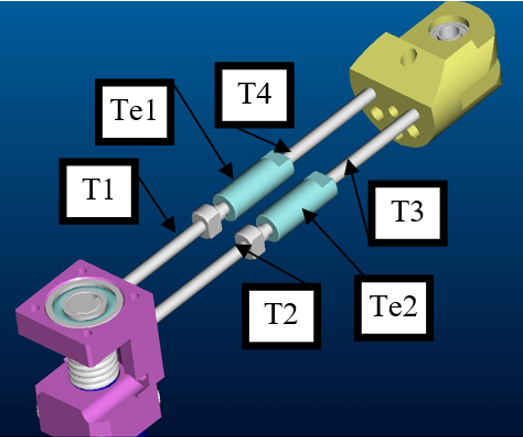
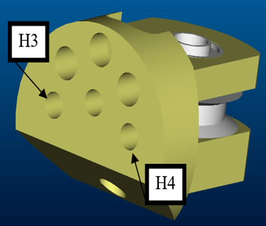
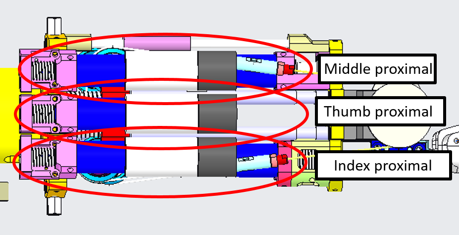
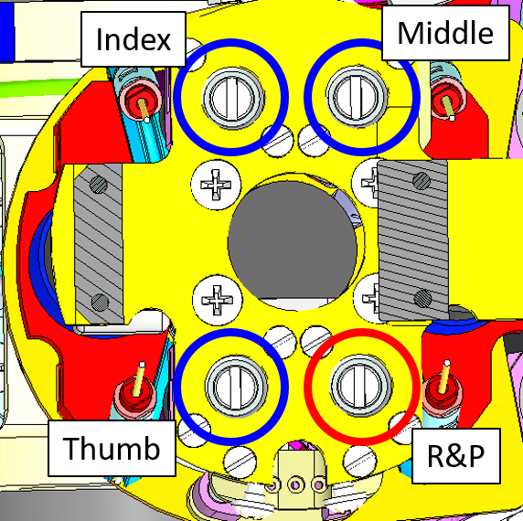
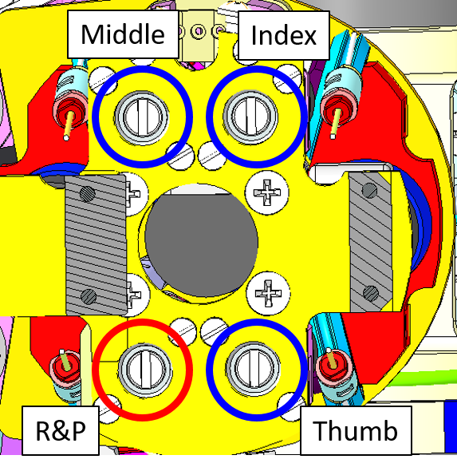
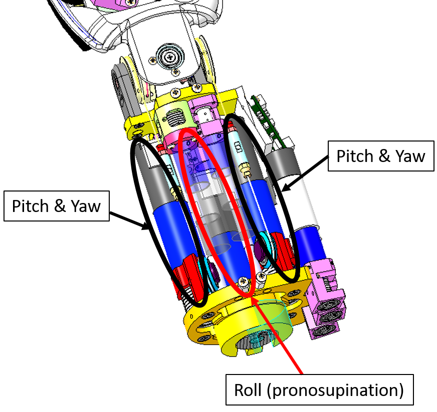

LOWER ARM V1 CABLING¶
CAD DESIGN¶
Let's have an overview of the mechanical CAD from different view angles and their specific names on CAD assembly.
| Left Forearm V1 | Right Forearm V1 |
|---|---|
 |
 |
1 Basic Principles¶
In the following document we describe how to connect the hand joints with the motors positioned in the forearm. The basic scheme is very simple and based on the following ideas:
Each motor rotates a pulley (P)
A (optionally coated) cable is twined around the pulley. The cable is fixed to the pulley by passing through a hole in the pulley (H).
The cable exits the motor by passing trough holes H1 and H2.
The cable enters into a tube (T1, T2, T3, T4) which guides its path trough the wrist. All the tubes are positioned on suitable sockets in correspondence of the holes (H1, H2).
Optionally the cable passes trough tensioners (Te1 and Te2) in between T1/T2 and T3/T4. Again the tensioners are provided with suitable sockets.
The cable exits the tube by entering into holes H3 and H4 once more equipped with suitable sockets for the tubes.
Refer to the following example pictures:
 |
 |
|  |  |
1.1 General Rules to be Followed¶
When mounting cables, pay attention to the fact that rotating the motor in a clockwise direction should correspond to a closure of the finger. The definition of clockwise rotation is given in the picture below. This rule is valid for all joints but distal joints; in the case of distal joints the closure of joints depends on some issues that will be discussed later on.

1.2 General Tips and Tricks¶
The uncoated cable is a bundle of smaller wires. When the cable is cut, this bundle may be corrupted (especially at the cable ending) by trying to pass the cable trough holes. A drop of glue on the cable ending may be useful.
Ideally the cable should be twined around the pulley P exactly at the middle of it. In particular, when the joint is in the middle of its range of movements the cable should leave the pulley P exactly at the level of the holes H1 and H2. If this is not the case, the friction of the cable at the level of H1 and H2 may break the cable after short usage.
Always check that the tubes are inside their sockets. If this is not the case cables will break easily due to high friction in correspondence of the input and output holes.
The tension of the cable is fundamental for having fingers working correctly. Always consider the possibility of using tensioners for increasing the cable tension.
2 WHAT DO I NEED TO CABLE¶
Here you will find the overall table describing the the mandatory sheaths to be used in the correct place.
| Finger | Typology | Label | Length (mm) |
|---|---|---|---|
| Thumb | Proximal short | 6+S | 74 |
| 6-S | 74 | ||
| Proximal long | 6+L | 124 | |
| 6-L | 124 | ||
| Distal | 4 | 132 | |
| Oppose | S0 | 50 | |
| Oppose | S2 | 57 | |
| Index | Proximal short | 8+S | 80 |
| 8-S | 53 | ||
| Proximal Long | 8+L | 125 | |
| 8-L | 140 | ||
| Distal | 5 | 140 | |
| Middle | Proximal short | 7+S | 75 |
| 7-S | 60 | ||
| Proximal long | 7+L | 125 | |
| 7-L | 143 | ||
| Distal | 3 | 135 | |
| Ring | Distal | 2 | 112 |
| Pinkie | Distal | 9 | 112 |
| Ring&Pinkie slider | Distal short | 0+S | 73 |
| 0-S | 60 | ||
| Distal long | 0+L | 80 | |
| Fingers | abduction | T0 | 38 |
| abduction | T2 | 27 | |
| abduction | T3 | 38 | |
| abduction | T4 | 44 |
Tip
Remember that symbol + = finger closure and symbol - = finger aperture.
3 HOW TO CABLE - FINGERS & HAND¶
3.1 Thumb oppose¶
To build the thumb oppose you just need 2 pieces of the sheath IITCODE 13963
| Label | Dimension (mm) | IITCODE - SHEATH |
|---|---|---|
| S0 | 50 | 13963 |
| S2 | 57 | 13963 |
And approximatively 40cm of IITCODE 1815 to route it.
| IITCODE | Alias | Description |
|---|---|---|
| 1815 | CG077063 | Stainless steel microcable, cable construction 7x7mm, nom. dia 0.63mm, not coated, AISI 316 |
| 13963 | MAZZONI_0_3-0_8-250_SS_SHEATH | Rectangular section sheath 0.3x0.8, L = 250 mm |
Here is a more detail specification of where to find the 2 pieces:
| Left Hand | Right Hand |
|---|---|
 |
 |
S0 exits the motor case from the hole near the motor (H2). Enters the finger in the hole which is internal to the palm (H3).
S2 exits the motor case from the hole near the ball bearing (H1). Enters the finger in the hole which is external to the palm (H4).
Note
Cable turns around the pulley with the thumb in the straight position (half thumb path) in order to permit the two opposite movements.
Please follow this link for an extended HOWTO route the cable.
3.2 Fingers Abduction¶
To build the fingers abduction you just need 4 pieces of the sheath IITCODE 2375
| Sheaths | Dimension (mm) | Label |
|---|---|---|
| T1 | 38 | T0 |
| T2 | 27 | T2 |
| T3 | 38 | T3 |
| T4 | 44 | T4 |
and approximatively 40cm of IITCODE 1815 to route it.
| IITCODE | Alias | Description |
|---|---|---|
| 1815 | CG077063 | Stainless steel micro-cable, cable construction 7x7mm, nom. diameter 0.63mm, not coated, AISI 316 |
| 2375 | SHEATH | Open spiral spring, inox steel AISI302, D ext= 1.6mm, D wire= 0.25mm, L = 500 mm |
Here is a more detail specification of where to find the 3 pieces:
| Left Hand | Right Hand |
|---|---|
 |
 |
Please follow this link for an extended HOWTO route the cable.
3.3 Proximal Joints¶
The 3 proximal joints :
- Thumb
- Index
- Middle
located here:
| LEFT FOREARM | RIGHT FOREARM |
|---|---|
 |
 |
are all wired with the cable 0.63mm uncoated from CARLSTAHL GmbH as per the following table:
| IITCODE | Alias | Description |
|---|---|---|
| 1815 | CG077063 | Stainless steel micro-cable, cable construction 7x7mm, nom. dia 0,63mm, not coated, AISI 316 |
Every sheath in which the cable pass through (+ and - ) is made of:
| IITCODE | Alias | Description |
|---|---|---|
| 13963 | MAZZONI_0_3-0_8-250_SS_SHEATH | Rectangular section sheath 0.3x0.8, L = 250 mm |
Please follow this link for an extended HOWTO route the cable.
3.3.1 Thumb Proximal¶
Here are the sheaths needed for the Thumb proximal Joint.
| Dimension | Label | Notes |
|---|---|---|
| 74(mm) | 6+S | Exits the motor case from the hole near the ball bearing (H1) |
| 74(mm) | 6-S | Exits the motor case from the hole near the motor (H2) |
| 124(mm) | 6+L | Enters the finger in the hole near the other fingers(H3) |
| 124(mm) | 6-L | Enters the finger in the hole near the wrist (H4) |
 |
 |
Note
For proximal cablings you need to mark with a suitable pen the cable most internal in the finger (palm opposite side). Then leave the cable and make a knot. Then you must pull the cable (the finger will be closed) and you can make the knot on the other cable nearest the palm, without marking with the pen.
3.3.2 Index Proximal¶
Here are the sheaths needed for the Index Proximal Joint.
| Dimension | Label | Notes |
|---|---|---|
| 80(mm) | 8+S | Exits the motor case from the hole near the ball bearing (H1) |
| 53(mm) | 8-S | Exits the motor case from the hole near the motor (H2) |
| 125(mm) | 8+L | Enters the finger in the hole close to the palm side (H3) |
| 140(mm) | 8-L | Enters the finger in the hole close to the back of the hand side (H4) |
3.3.3 Middle Proximal¶
Here are the sheaths needed for the Middle Proximal Joint.
| Dimension | Label | Notes |
|---|---|---|
| 75(mm) | 7+S | Exits the motor case from the hole near the ball bearing (H1) |
| 60(mm) | 7-S | Exits the motor case from the hole near the motor (H2) |
| 125(mm) | 7+L | Enters the finger in the hole close to the palm side (H3) |
| 143(mm) | 7-L | Enters the finger in the hole close to the back of the hand side (H4) |
3.4 Distal Joints¶
The 5 distal joints (theoretically 5 but in practice just 4 motors need to be wired):
- Thumb
- Index
- Middle
- Ring and Pinkie
Located here:
| LEFT FOREARM | RIGHT FOREARM |
|---|---|
|  |  |
Are wired with the following cables:
| IITCODE | Alias | Description | Joint |
|---|---|---|---|
| 2391 | U7194561 | Stainless steel microcable, cable construction 7x19mm, nom. dia 0.45mm, outer dia 0.61mm, Polyamide coated, AISI 316 - CARL STAHL GMBH | Thumb Index MiddleRing & Pinkie (from slider to fingers) |
| 1815 | CG077063 | Stainless steel micro-cable, cable construction 7x7mm, nom. dia 0.63mm, not coated, AISI 316 | Ring & Pinkie (slider movement) |
Please follow this link for an extended HOWTO route the cable.
3.4.1 Thumb Distal¶
The cable needed for the Thumb Distal Joint is IITCODE 2391 and the sheath:
| Dimension | Label | Notes |
|---|---|---|
| 132(mm) | 4 | Exits the motor case from the hole inside the forearm (H1) |

3.4.2 Index Distal¶
The cable needed for the Index Distal Joint is IITCODE 2391 and the sheath:
| Dimension | Label | Notes |
|---|---|---|
| 140(mm) | 5 | Exits the motor case from the hole inside the forearm (H1) |
3.4.3 Middle Distal¶
The cable needed for the Middle Distal Joint is IITCODE 2391 and the sheath:
| Dimension | Label | Notes |
|---|---|---|
| 135(mm) | 3 | Exits the motor case from the hole inside the forearm (H1). |
3.4.4 Ring & Pinkie Distal¶
This joint differs from the others since its movement is realized with a slider. The motor rotates so as to move the slider (clockwise rotations correspond to moving the slider proximally, i.e. closer to the elbow). The slider pulls a couple of wires so as to close the ring and little finger.
These 2 fingers are so actuated by 3 wires - 2 for the distal cables inside the fingers and 1 inside the motor shaft which moves the slider.
The 2 cables needed for the R&P Distal Joint (from slider to fingers) are IITCODE 2391 and the 1 cable needed for the slider movements is IITCODE 1815 . The sheaths needed are:
| Dimension | Label | Notes |
|---|---|---|
| 60(mm) | 0-S or 0- | Exits the motor case from the hole closer to the motor. Enters the hole in the slider near the hand (H5) |
| 80(mm) | 0+L | Exits the motor case from the hole close to the ball bearing and arrives to the tensioner |
| 73(mm) | 0+S | Exits from the tensioner and enters the hole in the slider near the elbow (H4) |
| 112(mm) | 2 | Exits from the slider (H10) and enters the finger which is closer to the hole - ring. |
| 112(mm) | 9 | Exits from the slider (H11) and enters the finger which is closer to the hole - pinkie. |
Tip
Before connecting the sheath to the support insert and exit the cable, otherwise after this operation it would be more complicated.
Here you can see the schematic of the cabling. The sheaths entering the fingers are represented in blue, while the sheaths for the slider movement are in red. The gray block is the tensioner.

Please follow this link for an extended HOWTO route the cable.
4 HOW TO CABLE - WRIST¶
The wrist movements (roll, pitch and yaw) are achieved with three motors located in the forearm. The wrist roll (or pronosupination) is achieved directly, i.e. without any cable driven joint.
The wrist pitch and yaw are instead cable driven. The actuation is achieved with two motors which jointly collaborate to the pitch and yaw degrees of freedom. The actuation is differential with the following relationship:
wrist_pitch = M1
wrist_yaw = M1 + M2
where M1 and M2 are the angular positions of the the two motors contributing to the movements.
| Wrist motors left arm | Section view left arm |
|---|---|
|  |  |
The overall cables of the wrist are all build from IITCODE 1815 with the following specifications:
| IITCODE | Alias/Provider Code | Description |
|---|---|---|
| 1815 | CG077063 | Stainless steel microcable, cable construction 7x7mm, nom. dia 0.63mm, not coated, AISI 316 |
4.1 Wrist Motor tendons¶
From the pictures below you will be able to locate and identify the tendons inside the Right Forearm building the active part of the wrist tendons.

From the pictures below you will be able to locate and identify the tendons inside the Left Forearm building the active part of the wrist tendons.


To get more details on how to rewire them, please follow this link.
4.2 Tensioner - IITCODE 3745¶
To properly tense the tendons of the Forearm it is mandatory to add the tensioner IITCODE 3745- alias CAD of the assembly: RC_TLR_007_G_014_00 - it is made by the following pieces:
| IITCODE | Revision | Alias | Description |
|---|---|---|---|
| 3756 | 2 | RC_TLR_007_P_042_00 | TENSIONER BODY |
| 3757 | 1 | RC_TLR_007_P_041_00 | TENSIONER SCREW |
| 2121 | RC_TLR_007_P_044_00 | LOCK NUT | |
| 3758 | 1 | RC_TLR_007_P_067_00 | TENSIONER SCREW |
| 2136 | RC_TLR_007_P_068_00 | LOCK NUT |
Note
Note that RED nut and the RED extremity of the tensioner assembly are left hand-threaded (wrist side). Pay attention to the direction of turning.
4.3 Wrist Passive tendons¶
From the pictures below you will be able to locate and identify the 2 tendons inside the wrist building the passive part of the wrist movements.
 |
 |
 |
 |
 |
To get more details on how to rewire them, please follow this link.